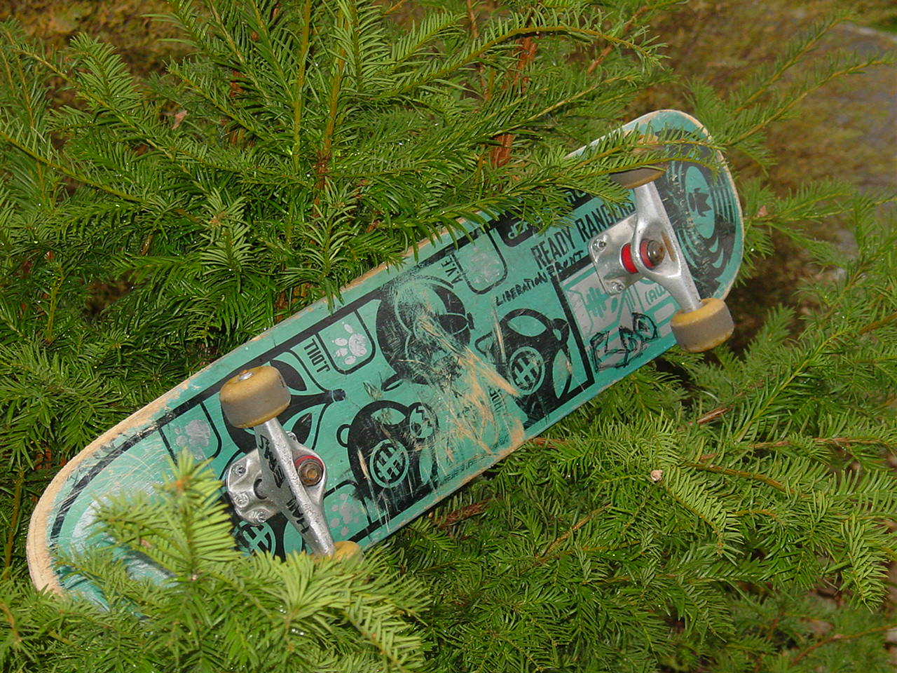

Redemption
| Last article | Table of contents | Next article |
|---|
| Last article | Table of contents | Next article |
|---|
HoW -=[rRlf]=- was found3d by dr.g0nZo
Hay folks! Did you ever think about how rrlf was founded?? I think i았e forgotten it all, but I앏l try to remember ;) About all that shit we have done when we were younger and just some skateboardin kiddies.... We were all in the age of about 15 and phillie was, hmm, i guess 17 as we met the first time in my hood while we were skateboarding and then we decided to "unsecure" a supermarket parking site as our new fuckin amazing skatepark... In the first weeks we always had some excessivly alcoholised skate-fun-shit-doin rides on. In the evening we mostly went to the house of phil3T0ast3r to trink more beer and smoke some weed, watch some movies. You know how this is, being drunk with friends that are all totally crazy and fuckin cool.... U know, don't you? After we had some discussion about computers, coding and warez and all that shiat we았e recognized that each of us is doin his thing on pc압, ok, so we thought it would be cute to found a coding-group. So what should be our name?? Then eeo came up with his new board and yeah, hope you can imagine what happened when you look at the pic:

U see? This is the really [unfamous] Deck that inspired us...
As phil3T0ast3r startet our first page it was just a cool day and we openend some beer to celebrate the www.readyrangers.tsx.org thing that was still cute. When first probs and some flames have been written into our guestbook we decided to make it bigger and better... Some local advertisement was necessary, so everyone of us bought some eddings for crappy tags and after a nice shopping day some higher standard shit would be a pleasure for the world. The new car parking house was a nice target for some script kiddie sprayer amateurs and their aka압... In our local ciddy some retarded guys with nasty e-mail accounts had to learn how unsecure the i-net was (this happenend 3 years ago, i guess) and we made some "friends" of us meant to each other, reason for this hatefull relationships were some e-mails from some suspicious accounts which had about 2 users. And now it was time for some extra advertisement, something special we thought this time so we went out to the streets to search for more stupidity and finally we았e seen this 20 old cars and tagged them the hell down. When a strange guy came up with his boy we were running like crazy cows and he got us, nah, in the night we went back to the cars and cleaned them all so that those cars looked newer than before... rRlf has grown and I앐 still an amateur in writing some articles or something else. sry. but I hope you like this really lil story...